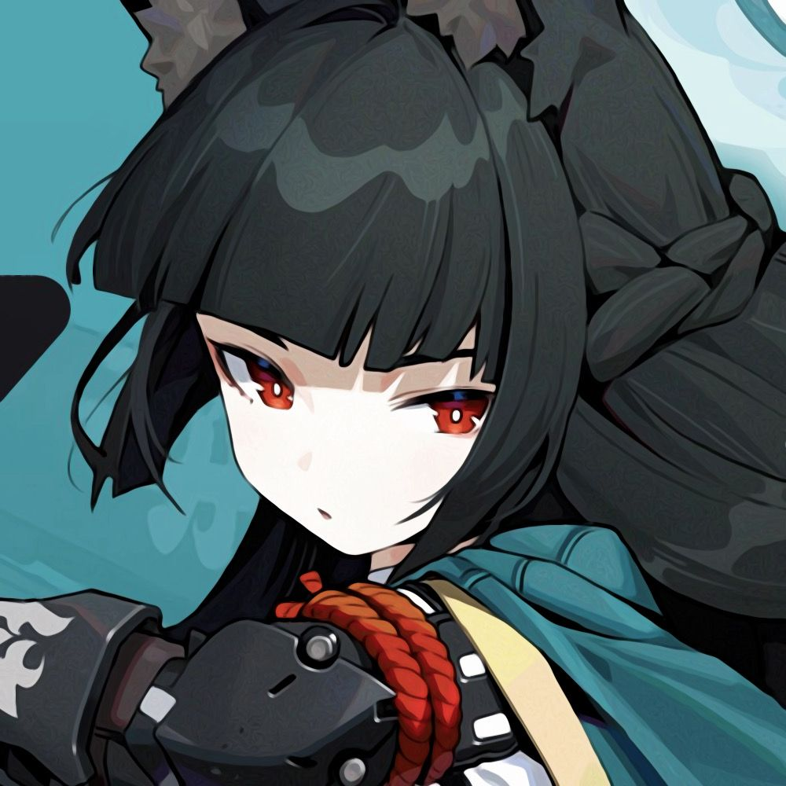

Hoshimi Miyabi, a mais jovem caçadora do vazio da história e chefe da facção de Operações Especiais do Vazio Seção 6
sendo uma mulher que desafia o status quo e usa a "Sem Cauda", sua espada amaldiçoada de herança familiar, para proteger
Nova Eridu e revelar a corrupção que ocorre por trás da cidade.
Tipo: Anomalia
Elemento: Geada

Von Lycaon, , o líder substantivo e representante da facção Companhia Serviços de Limpeza da Casa Victoria, é responsável por
gerenciar todos os membros da companhia, sendo racional e confiávle, Lycaon é um cavalheiro elegante e um mordomo versátil que
pode resolver qualquer problema.
Tipo: Atordoador
Elemento: Gelo

Astra Yao é imensamente reconhecida com a cantora mais icônica de Ridu, fazendo parte da facção Estrelas de Lyra. Com sua voz
extraordinária, presença de palco e um talento para escrita de músicas, ela liderou as tendências musicais de toda uma era, e mesmo
que tenha toda essa fama, permanece sincera e pura, com sua voz ressoando profundamente no público.
Tpo: Assistência
Elemento: Éter